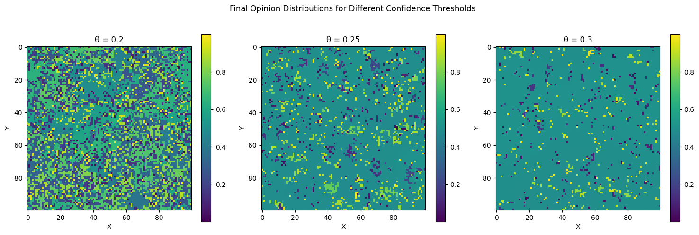
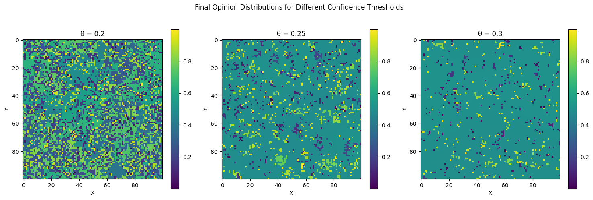

 

Niech \(G = (V, E)\) będzie grafem, który może być skończony lub nieskończony o ograniczonym stopniu. Model Deffuanta na \(G\) z parametrami \(\mu \in \left(0, 1/2\right]\) i \(\theta \in (0, 1)\) jest zdefiniowany w następujący sposób. W momencie \(t = 0\) wartości \(\eta_0=\{ \eta_0(x)\}_{x \in V}\) są niezależnie o rozkładzie jednostajnym na \([0, 1]\). Każda krawędź \(e \in E\) jest wyposażona w niezależny proces Poissona o jednostkowej intensywności. Następnie proces \(\eta_t=\{\eta_t(x)\}_{x \in V}\) zmienia się według następującej reguły. Dla każdego \(v \in V\) Wartość \(\eta_t(v)\) pozostaje niezmieniona dopóki nie nastąpi zdarzenie Poissona dla którejkolwiek z krawędzi o końcu w \(v\). Gdy w pewnym losowym momencie \(\tau\) zegar Poissona zadzwoni na krawędzi \(e = \{u, v\}\) to dla \(\eta_{\tau-}(u) = a\) (co oznacza \(\lim_{s \uparrow \tau} \eta_s(u) = a\)) i \(\eta_{\tau-}(v) = b\), kładziemy \[\eta_\tau(u) = \begin{cases} a + \mu(b - a) & \text{jeśli } |a - b| \leq \theta, \\ a & \text{w przeciwnym razie}, \end{cases}\] oraz \[\eta_\tau(v) = \begin{cases} b + \mu(a - b) & \text{jeśli } |a - b| \leq \theta, \\ b & \text{w przeciwnym razie}. \end{cases}\] Można to uznać za model formowania konsensusu w społeczności. Każdy wierzchołek \(v \in V\) reprezentuje jednostkę, a \(\eta_t(v)\) jej przekonanie lub opinię na jakiś temat. Dynamika zdefiniowana powyżej jest uproszczonym modelem następującego zjawiska. Załóżmy, że wierzę, iż wszechświat ma \(13,5 \times 10^9\) lat, i spotykam Alicję, która uważa, że wszechświat ma \(13,0 \times 10^9\) lat. Jej oszacowanie wydaje się być rozsądne, a ona myśli to samo o moim. Powoduje to, że dostosowuję moje szacowanie do \(13,4 \times 10^9\) lat, podczas gdy ona podnosi swoje do \(13,1 \times 10^9\) lat. Jeśli natomiast spotykam Sarę, która uważa, że wszechświat ma zaledwie \(6000\) lat, to wnioskuję, że jest szalona, co ona również uważa o mnie, więc żadne z nas nie znajduje powodu, aby dostosować swoje oszacowania. Ogólnie rzecz biorąc, jesteśmy skłonni brać opinie innych osób na poważnie tylko wtedy, gdy mieszczą się one w pewnym określonym zakresie \(\theta\) naszych własnych.
Naturalnym zagadnieniem w tym kontekście jest konsensus. Czy istnieją krawędzie \(\{x, y\} \in E\) takie, że \[\liminf_{t \to \infty} | \eta_t(x) - \eta_t(y)| \geq \theta.\] W przypadku nieskończonych grafów pełna odpowiedź jest znana tylko dla \(G = \mathbb{Z}\). Dla grafów skończonych znane oszacowania są dalekie od optymalnych. Symulacje wskazują, że konsensus ma miejsce, gdy \(\theta>1/2\).
DALEJ: Model głosowania